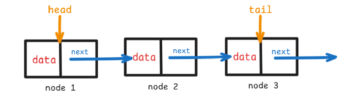
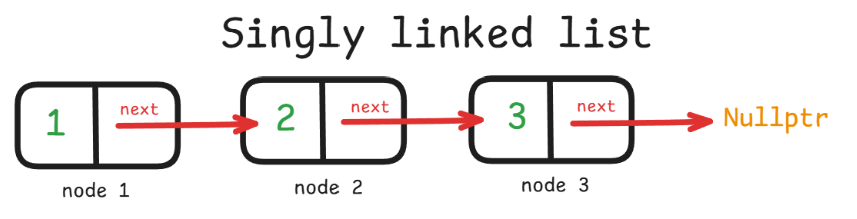
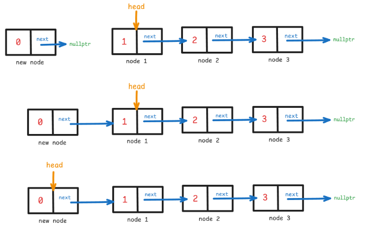
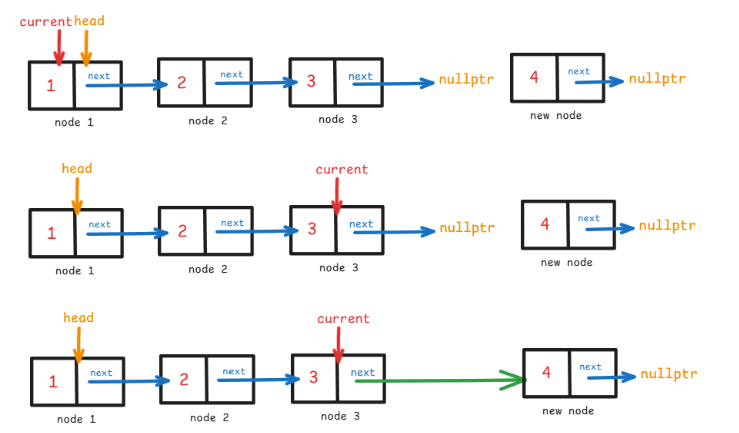
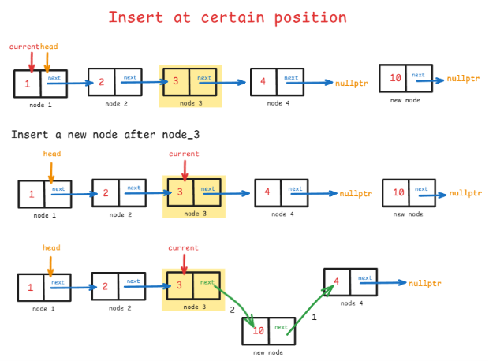

Singly linked lists
Each node carries a value and one next pointer, so the chain runs in a single direction. Everything below is a variation on the same move: walk to the right node, then rewire a pointer.
Head and tail
Two pointers describe the ends of the list. Head holds the address of the first node and is your entry point to everything else — if the list is empty it points to nullptr. Tail holds the address of the last node.
Click to expand

Lose the head pointer and you lose the whole list — nothing else knows where it starts.
Defining and building a node
A node groups two different variables under one name, which is exactly what a struct is for: the data, and the pointer to the next node.
Click to expand — struct, constructors and a first list
The struct
struct Node {
int data; // stores a value
Node* next; // pointer to the next node
};Constructors
A constructor runs automatically when a node is created, so you can set the data and the pointer in one step instead of assigning them afterwards.
struct Node {
int data;
Node* next;
// default: empty node, pointing nowhere
Node() : data(0), next(nullptr) {}
// value only — next still points nowhere
Node(int x) : data(x), next(nullptr) {}
// value and the node that follows it
Node(int x, Node* ptr) : data(x), next(ptr) {}
};Building a list
Create the last node first, then work backwards — each new node needs the address of the one after it.
int main() {
// data = 3, next → nullptr
Node* node3 = new Node(3);
// data = 2, next → node3
Node* node2 = new Node(2, node3);
// data = 1, next → node2
Node* node1 = new Node(1, node2);
}
Traversal
Start at head and follow next until you hit nullptr. Copy the head into a temporary current pointer first — move head itself and you've thrown away the start of the list.
Click to expand
void traverse(Node* head) {
// temporary pointer, starting at the head
Node* current = head;
while (current != nullptr) {
cout << current->data << " ";
// step to the next node
current = current->next;
}
}When the loop ends current is nullptr and head is untouched.
Getting the size
There's no stored length — you count as you walk, which makes this O(n) where a vector's .size() is instant.
Click to expand
int size(Node* head) {
Node* current = head;
int count = 0;
while (current != nullptr) {
count++;
current = current->next;
}
return count;
}Inserting elements
Three positions, same shape each time: make the node, point it at what should follow, then point the thing before it at the new node. Order matters — link the new node first, or you'll lose the rest of the list.
Click to expand — front, back and a given position
At the front
Cheapest insertion there is: no traversal at all.

void add_front(int val, Node*& head) {
Node* newNode = new Node(val);
// the new node points at the old first node
newNode->next = head;
// head now points at the new node
head = newNode;
}At the end
Without a tail pointer you have to walk to the last node first, which makes this O(n).

void add_back(int val, Node* head) {
Node* newNode = new Node(val);
Node* current = head;
// walk to the last node
while (current->next != nullptr) {
current = current->next;
}
// link it on
current->next = newNode;
}At a given position
Stop at the node before the target position — you need to change its next.

void insert_at_position(int val, int pos, Node* head) {
Node* newNode = new Node(val);
// walk to the node before the position
Node* current = head;
for (int i = 1; i < pos; i++) {
current = current->next;
}
// splice the new node into the chain
newNode->next = current->next;
current->next = newNode;
}Deleting an element
Two steps every time: route the chain around the node, then delete it. Skip the second and the node leaks; do it in the wrong order and you're reading freed memory.
Click to expand — front, back and a given position
From the front
void delete_front(Node*& head) {
// keep hold of the old first node
Node* temp = head;
// move head along
head = head->next;
// free the old one
delete temp;
}From the end
You need the second-to-last node, because it's the one whose next has to become nullptr.
void delete_back(Node*& head) {
// walk to the second-to-last node
Node* current = head;
while (current->next->next != nullptr) {
current = current->next;
}
delete current->next;
// mark the new end of the list
current->next = nullptr;
}At a given position
void delete_at_position(int pos, Node*& head) {
// walk to the node before the target
Node* current = head;
for (int i = 1; i < pos; i++) {
current = current->next;
}
// the node to remove
Node* temp = current->next;
// route around it
current->next = temp->next;
// free it
delete temp;
}These functions assume the list is long enough for what you're asking. On an empty list current->next dereferences nullptr and crashes, and the same happens when pos runs past the end. Real implementations check for those cases first.